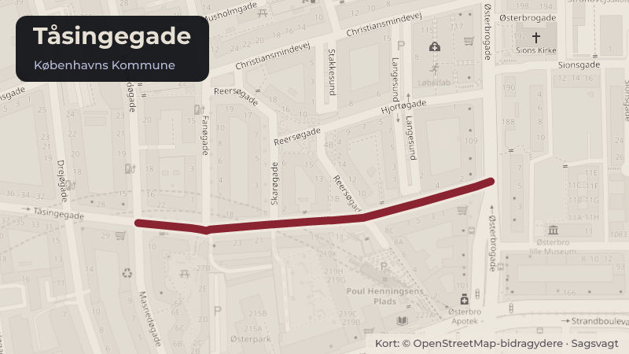

Besluttet 1. juni, Klima-, Miljø- og Teknikudvalget
Fysisk helhedsplan, AKB, København, afd. 1041-8, Øbrohus/Tåsingegade, Østerbro
Klima-, Miljø- og Teknikforvaltningen har den 17. december 2025 modtaget en fysisk helhedsplan for et renoveringsprojekt med støtte fra Landsbyggefonden for AKB, København afd. Øbrohus/Tåsingegade, Østerbro. Almene boligafdelinger kan søge Landsbyggefonden om renoveringsstøtte.
Steder i sagen: Tåsingegade

Kort fortalt
- Forslaget
- Godkende den fysiske helhedsplan for den almene boligafdeling AKB, København, afd. 1041-8, Øbrohus/Tåsingegade, jf. bilag 2, hvilket indebærer
- Klima-, Miljø- og Teknikudvalget bemyndiges til at stille kommunal garanti på op til 100 % for realkreditlån på samlet 319,8 mio. (inkl. 5 % regulering) kr. til renovering af AKB, København afd. 1041-8, Øbrohus/Tåsingegade under …
- Klima-, Miljø- og Teknikudvalget bemyndiges til at godkende det endelige projekt og anskaffelsessum under forudsætning af, at der ikke er væsentlige afvigelser i forhold til det oplyste, jf. bilag 2 og 3.
- Hvem
- Klima-, Miljø- og TeknikudvalgetGår videre til Økonomiudvalget og Borgerrepræsentationen
- Hvornår
- Mandag 1. juni 2026
- Status
- Besluttet. Indstillingen blev anbefalet over for Økonomiudvalget og Borgerrepræsentationen uden afstemning.
- Næste skridt
- Når Borgerrepræsentationen har godkendt indstillingen, vil Klima-, Miljø- og Teknikforvaltningen meddele støttetilsagn. De første byggearbejder forventes at kunne påbegyndes i 2028.
Sagens vej
- 1. juniKlima-, Miljø- og TeknikudvalgetAnbefalet
- 16. juniØkonomiudvalgetBesluttet
- 25. juniBorgerrepræsentationenGodkendt
Læs hele sagen Kommunens egen tekst
Indstilling
Klima- Miljø og Teknikforvaltningen indstiller, at Klima-, Miljø- og Teknikudvalget over for Økonomiudvalget og Borgerrepræsentationen anbefaler,
• at godkende den fysiske helhedsplan for den almene boligafdeling AKB, København, afd. 1041-8, Øbrohus/Tåsingegade, jf. bilag 2, hvilket indebærer,
• at Klima-, Miljø- og Teknikudvalget bemyndiges til at stille kommunal garanti på op til 100 % for realkreditlån på samlet 319,8 mio. (inkl. 5 % regulering) kr. til renovering af AKB, København afd. 1041-8, Øbrohus/Tåsingegade under forudsætning af, at de endelige lån ikke afviger væsentligt i forhold til det oplyste, jf. bilag 3, og
• at Klima-, Miljø- og Teknikudvalget bemyndiges til at godkende det endelige projekt og anskaffelsessum under forudsætning af, at der ikke er væsentlige afvigelser i forhold til det oplyste, jf. bilag 2 og 3.
Det forudsættes, at eventuelle merudgifter, som følge af sagen, afholdes inden for Klima-, Miljø- og Teknikudvalgets budgetramme.
Problemstilling
Klima-, Miljø- og Teknikforvaltningen har den 17. december 2025 modtaget en fysisk helhedsplan for et renoveringsprojekt med støtte fra Landsbyggefonden for AKB, København afd. Øbrohus/Tåsingegade, Østerbro.
Almene boligafdelinger kan søge Landsbyggefonden om renoveringsstøtte. Det er en forudsætning for Landsbyggefondens støtte, at boligorganisationen udarbejder en fysisk helhedsplan for renoveringsarbejderne, der skal godkendes af beboerne. Det er en forudsætning for Landsbyggefondens støtte, at kommunen godkender helhedsplanen.
Helhedsplanen og den kommunale støtte i form af kommunal garanti skal godkendes af Borgerrepræsentationen.
Løsning
Afdeling Øbrohus/Tåsingegade er opført i årene 1958-61. I 1969 kom bygningen i Tåsingegade til. Afdelingen består af 223 familieboliger og 26 ungdomsboliger. Renoveringsarbejderne i afdelingen består i opretning af tage, murværk, betonskader samt gavlisolering og kuldebrosisolering. Derudover vedligehold af altaner samt udskiftning af døre og vinduer. Indvendigt etableres der ny ventilation og der gennemføres en skimmelsvampsanering. Beboerne genhuses under renoveringen. Projektet er nærmere beskrevet i bilag 2.
Renoveringen koster 319,8 mio. kr. (inkl. 5 % regulering), hvilket svarer til en gennemsnitlig udgift på ca. 1,3 mio. kr. pr. bolig.
Husleje
Den nuværende leje for familieboliger ligger på gennemsnitlig 1.049 kr. pr. m2 pr. år (2026-niveau) eksklusive forbrug. Den fremtidige leje anslås at ligge på gennemsnitlig 1.344 kr. pr. m2 pr. år (2026-niveau) eksklusive forbrug.
Den nuværende leje for ungdomsboliger ligger på gennemsnitlig 1.043 kr. pr. m2 pr. år (2026-niveau) eksklusive forbrug. Den fremtidige leje anslås at ligge på gennemsnitlig 1.337 kr. pr. m2 pr. år (2026-niveau) eksklusive forbrug.
Stigningen svarer til ca. 28 %.
Tabel 1 Huslejeberegning pr. boligtype
Husleje pr. m2
Månedlig husleje
Nuværende leje kr. / m² / år
Fremtidig leje kr. / m² / år
Stigning i %
Nuværende leje kr./md. i gns.
Fremtidig leje kr./md. i gns.
Familiebolig
1.049
1.344
28,04%
4.458
5.712
Ungdomsbolig
1.043
1.337
28,04 %
3.042
3.900
Lejen er eksklusive forbrug og i 2026 niveau. Månedlig husleje er for en gennemsnitlig bolig på henholdsvis 51 m² og 35 m2.
Helhedsplanen er godkendt af afdelingen og AKB, Københavns organisationsbestyrelse.
Fortætning
AKB, København er ved at afklare fortætningsmuligheder i afdelingen i forbindelse med helhedsplanen. Helhedsplanen indstilles nu for at sikre sagens fremdrift. Det er en forudsætning, at fortætning afklares inden skema B. Forvaltningen vil betinge sig, at helhedsplan samt mulig fortætning sammentænkes og koordineres. Dette skal ske i samarbejde med Landsbyggefonden og kommunen.
Politisk handlerum
Hvis indstillingen ikke godkendes, vil det medføre, at afdelingen ikke bliver renoveret med støtte fra Landsbyggefonden. Det må forventes, at mange af arbejderne skal gennemføres inden for en kortere årrække. Huslejestigningen vil blive højere for disse arbejder, da afdelingen ikke vil modtage støtte fra Landsbyggefonden.
Økonomi
Hvis kommunen godkender helhedsplanen, indebærer det, at kommunen også accepterer at medvirke økonomisk til projektets gennemførelse ved at stille garanti for lån til renoveringsprojektet.
Det samlede kommunale bidrag til renoveringsprojekterne er kommunal garanti for realkreditlån på op til 319,8 mio. kr. (inkl. 5 % regulering). Kommunens økonomiske medvirken i de enkelte projekter er nærmere beskrevet i bilag 3.
Kommunens garantistillelse er en forudsætning for, at Landsbyggefonden vil yde støtte i form af regaranti og ydelsesstøtte til de indstillede renoveringsarbejder, jf. almenboliglovens regler herom. Kommunen stiller garanti for realkreditbelåningen i fornødent omfang. Størrelsen på garantierne afklares med boligorganisationerne og långiverne inden for den afsatte ramme i forbindelse med byggeregnskabet. Landsbyggefonden regaranterer for 50 % af kommunens garanti for det støttede lån på i alt ca. 216,5 mio. kr. Det betyder, at kommunens samlede nettogaranti maksimalt vil udgøre 211,6 mio. kr. af de samlede støttede og ustøttede lån (inkl. forholdsmæssig fordelt 5 % regulering). Den kommunale garanti er en eventualforpligtelse, der ikke umiddelbart belaster kommunens økonomi. Garantien kommer kun til udbetaling, såfremt boligafdelingen ikke selv kan betale ydelserne på lånet. Forvaltningen har ikke på nuværende tidspunkt indikationer på, at garantien vil komme til udbetaling.
Videre proces
Når Borgerrepræsentationen har godkendt indstillingen, vil Klima-, Miljø- og Teknikforvaltningen meddele støttetilsagn. De første byggearbejder forventes at kunne påbegyndes i 2028.
Der vil senere blive forelagt indstilling til Klima-, Miljø- og Teknikudvalget om den endelige kommunale garanti for lån til arbejderne.
Beslutning
Indstillingen blev anbefalet over for Økonomiudvalget og Borgerrepræsentationen uden afstemning.
Bilag
- Bilag 1 Overblik over politisk behandling
- Bilag 2 Projektbeskrivelse
- Bilag 3 Økonomi
Kilde: Københavns Kommune, Klima-, Miljø- og Teknikudvalget, referat fra mødet mandag 1. juni 2026, punkt 22. Læs den originale sag hos kommunen.